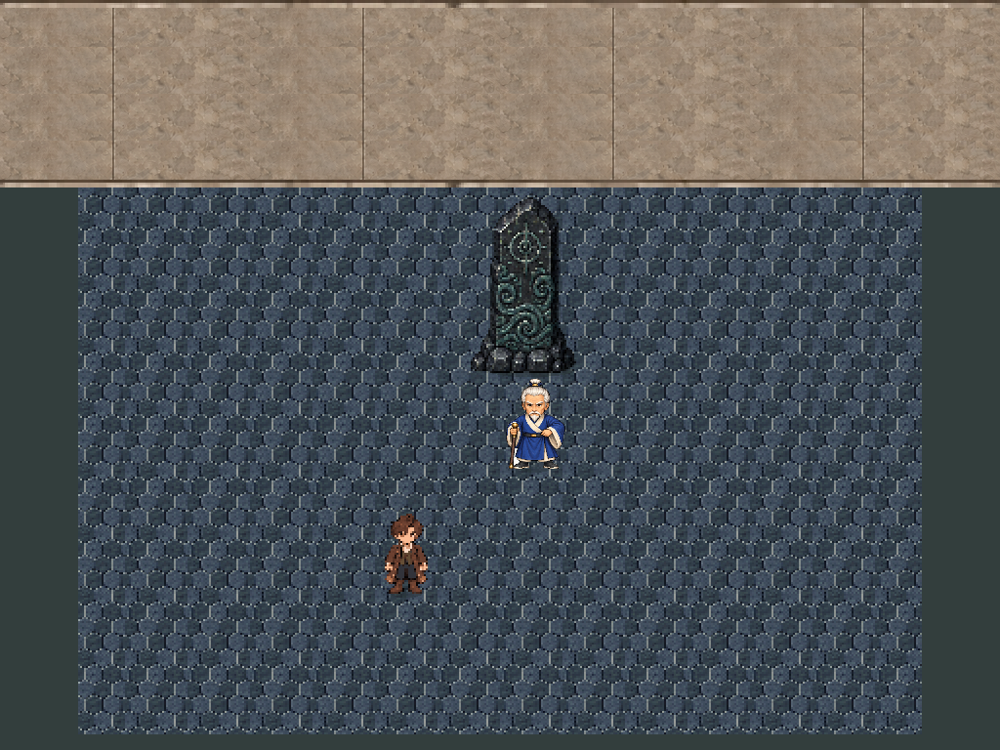
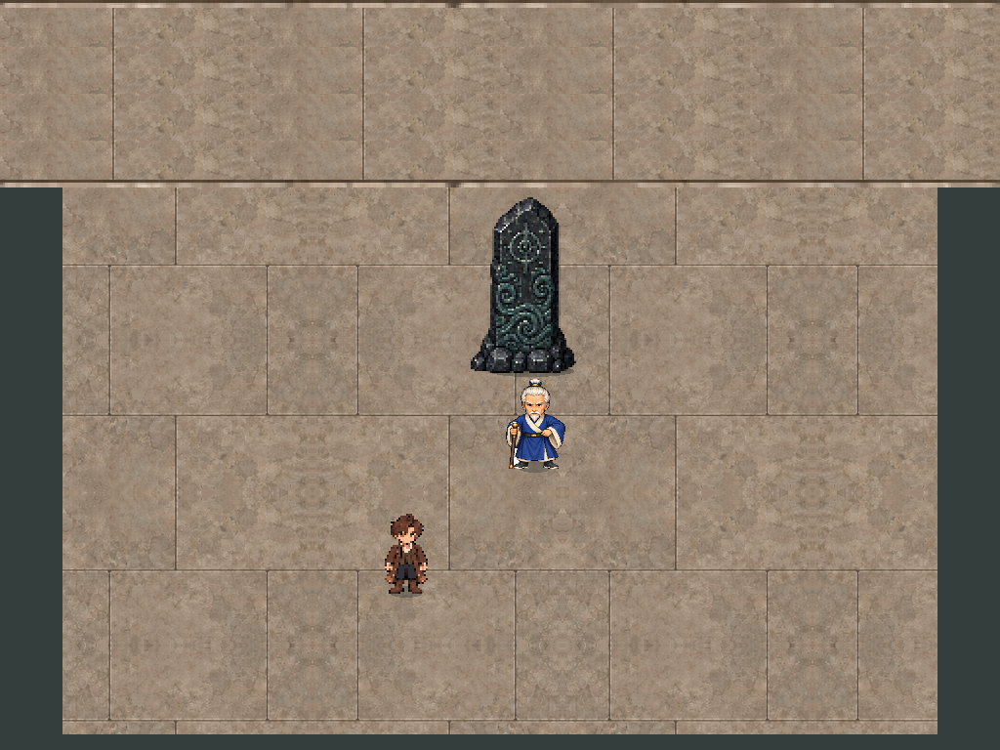
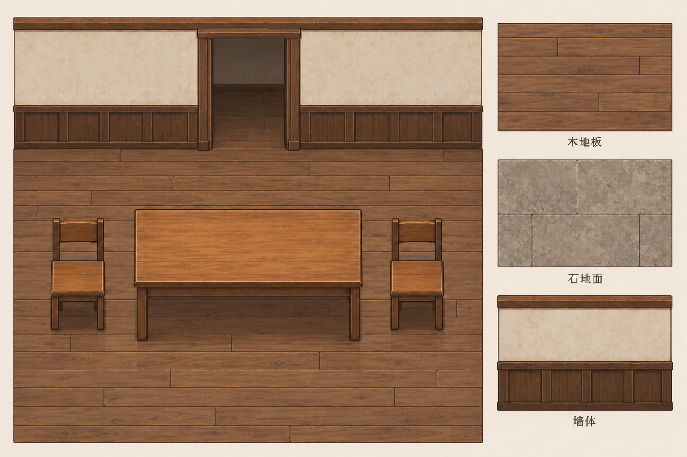
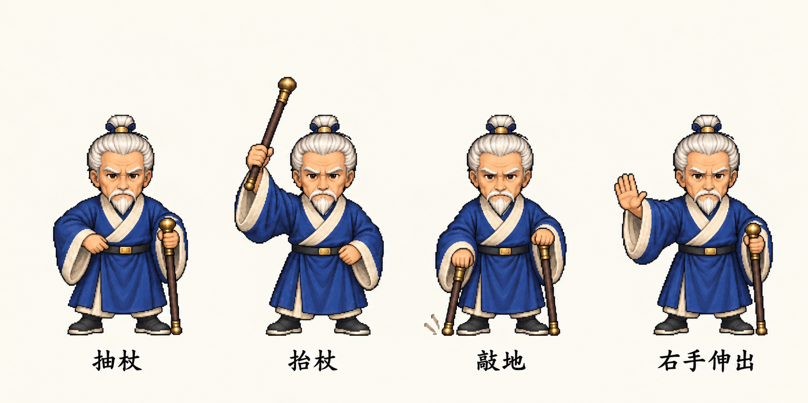
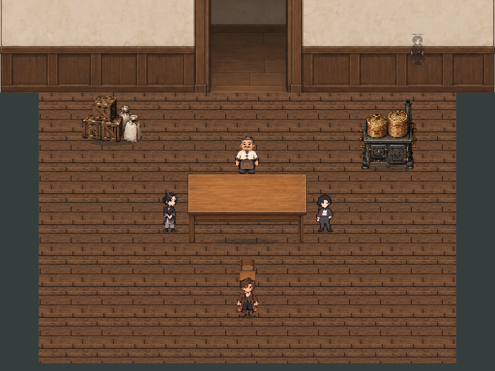
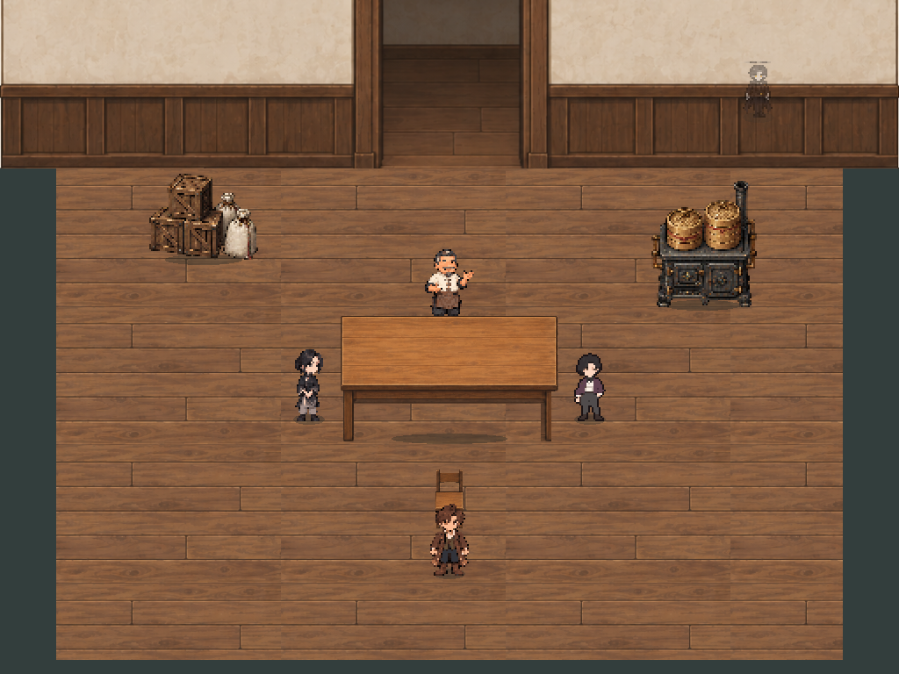
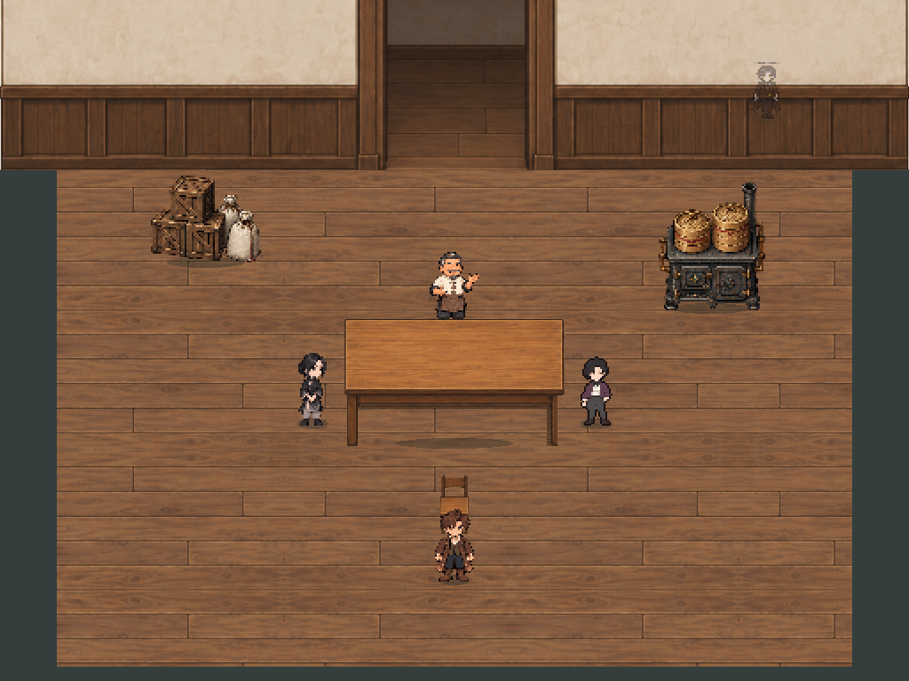
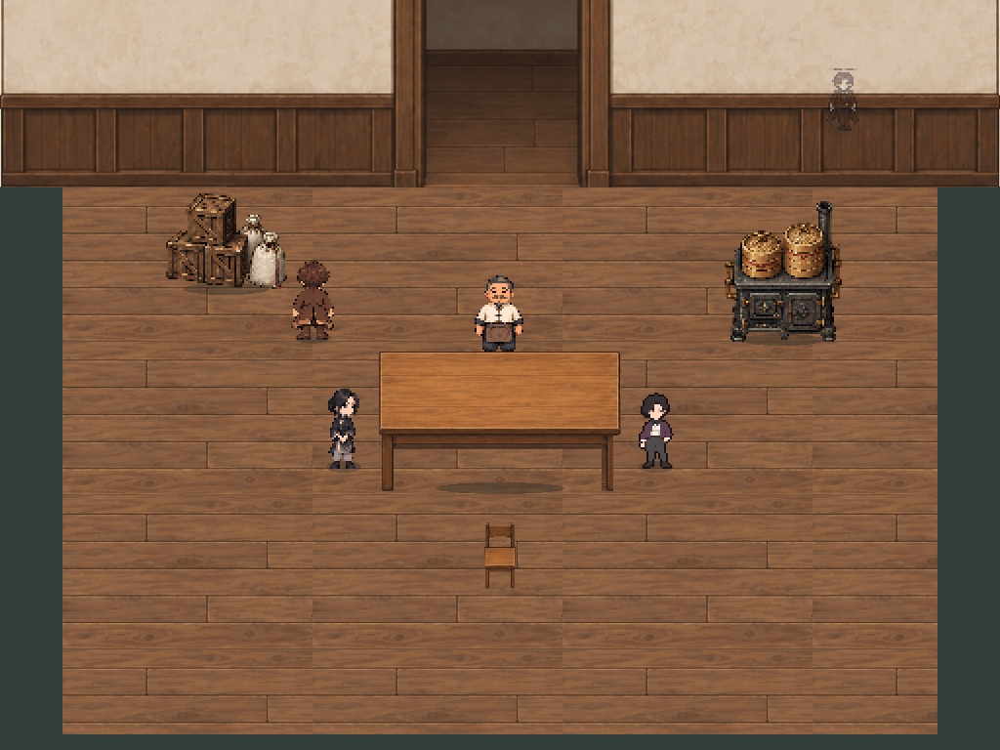
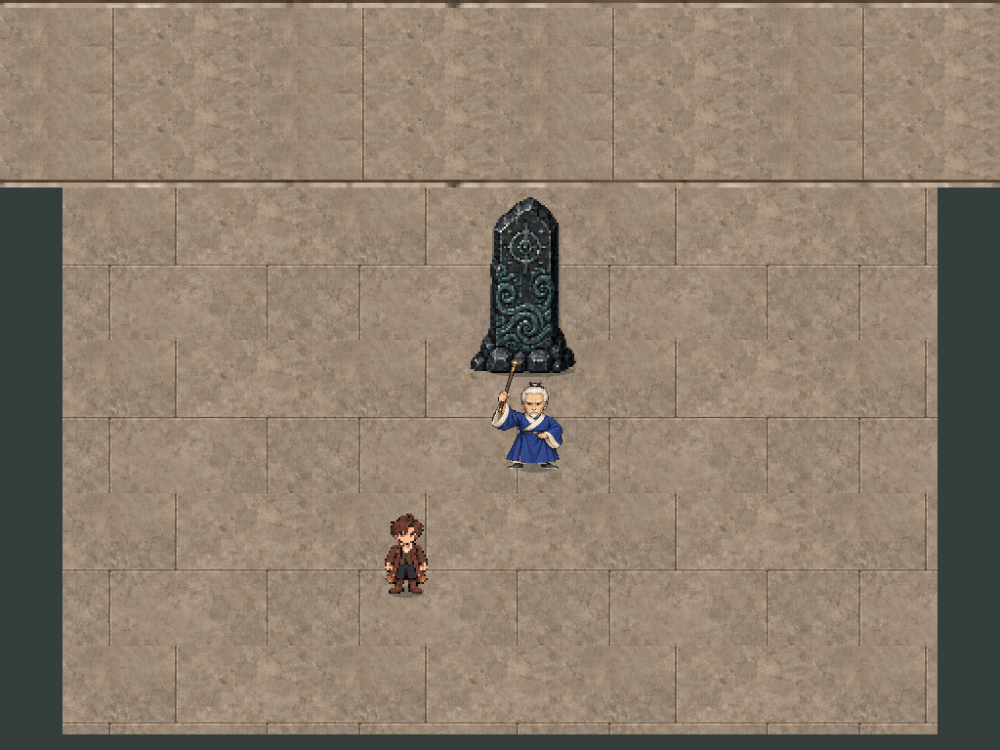
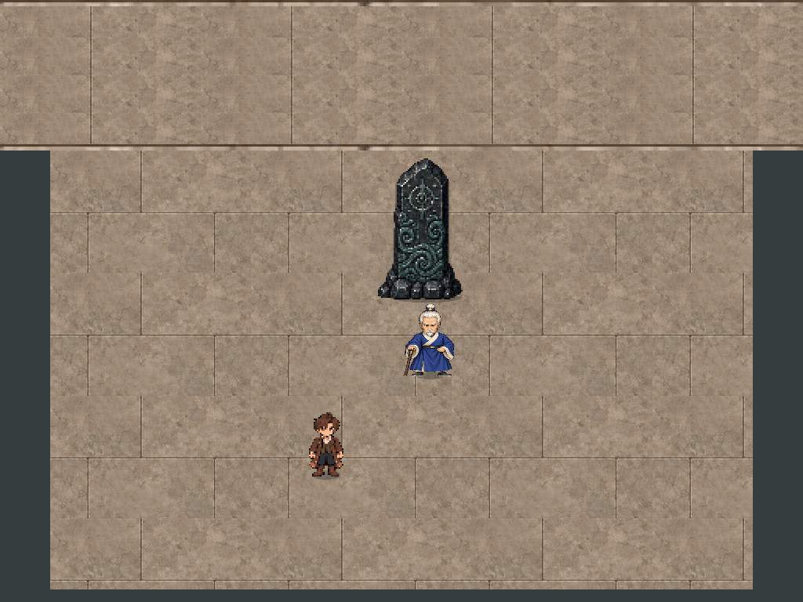

取景为原512×384世界范围，1024×768 SubViewport及2倍相机；PNG直接读取游戏视口，没有补画、修图、拼接UI或生成式替换。范围仅厨房/餐厅及护碑两段条件节选，不创建Core会话。


发布只包含源图裁切、透明分离、镜像与尺寸对齐；桌面仍为矩形，无梯形收缩。每项变换和原图SHA-256见发布清单。源板没有无缝边界保证，C方案镜像完整模块匹配边缘，未重画纹理。








一次全量资源导入曾异常退出（3221226356），未把该次旧截图作结果；改为复用已有资源导入缓存后完成当前采集。自动审批阻止旧测试目录删除；本次沿固定目录逐文件覆盖。报告已核对所有引用PNG晚于本轮源码指纹、源码指纹未变、二进制长度与SHA-256完整，不引用未重产的旧截图。
本轮源码指纹 · 实际运行输出 · 输入与身体采样二进制 · 源图裁切与变换清单